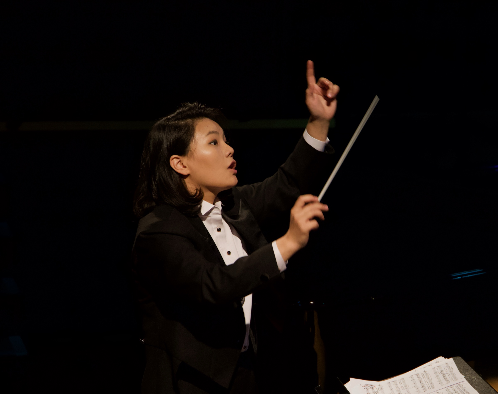
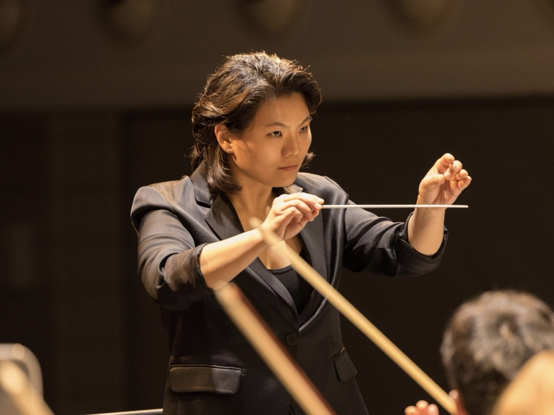

Conductor

Berlin-based South Korean conductor Rira Kim began violin studies at an early age and completed her violin degree in Seoul. She studied orchestral conducting at the Hochschule für Musik Hanns Eisler Berlin with Prof. Christian Ehwald. She continued her master's studies with Markus Stenz, graduating with highest distinction. As part of her graduation, she conducted the Konzerthausorchester Berlin.
As a finalist of the German Conducting Award 2025 (10 out of 234 applicants), she is considered one of the most promising young conductors of her generation. In 2022, she was among 13 selected participants out of 190 international applicants for Das Kritische Orchester, and was also selected as one of three finalists in a selection process of the Korean National Symphony Orchestra Conducting Workshop 2023.
She was selected for several prestigious opportunities, including a Conducting Fellowship with the Seoul Philharmonic Orchestra, the SOV Conducting Masterclass led by Kristiina Poska, and the Gabriel Pierné Conducting Masterclass with David Reiland and the Orchestre national de Metz. In addition, she participated in a masterclass led by Andrés Orozco-Estrada at the Escuela Superior de Música Reina Sofía in Madrid. She received further artistic inspiration in masterclasses with Marin Alsop, Paavo Järvi, Jaap van Zweden, Daniele Gatti, Jorma Panula, and Johannes Schlaeflie including at the International Bartók Festival in Szombathely.
Alongside her symphonic work, she has developed a strong affinity for opera. In 2021, she conducted an opera gala at the Konzerthaus Berlin for the semester opening with the Philharmonic Orchestra of the Staatstheater Cottbus. She also worked as a répétiteur for the world premiere "Vater unser, unser Vater," a collaboration with the Deutsche Oper Berlin. She further deepened her operatic training through the studio of the Korean National Opera assisting productions such as 'Die Zauberflöte' and 'Don Giovanni'. In 2025, she conducted the world premiere of "Dessert of Water" at the Deutsche Oper Berlin as part of "Neue Szenen VII," as well as another project within "Neue Szenen VIII."
A major milestone was her role as assistant to Markus Stenz for the Dutch premiere of "Alice in Wonderland" by Unsuk Chin with the Netherlands Radio Philharmonic Orchestra at the Concertgebouw Amsterdam.
She has collaborated with numerous renowned orchestras worldwide, including Konzerthausorchester Berlin, Seoul Philharmonic Orchestra, Korean National Symphony Orchestra, Irish National Symphony Orchestra, Symfonieorkest Vlaanderen, Orchestre national de Metz and Philharmonische Orchester des Staatstheaters Cottbus.
In addition to her professional engagements, she is actively involved with amateur musicians and educational projects for children and youth. Since 2024, she is the musical director of Neues Kammerorchester Wedding.
She is praised for her radiant energy, clear communication, charismatic musical temperament and her human, inspiring leadership. Her artistic range spans from classical opera and symphonic repertoire to contemporary music, where she brings a distinctive and compelling musical voice.
Die in Berlin lebende südkoreanische Dirigentin Rira Kim erhielt bereits im frühen Alter Violinunterricht und studierte Orchesterdirigieren an der Hochschule für Musik Hanns Eisler Berlin bei Prof. Christian Ehwald. Ihr Masterstudium setzte sie bei Markus Stenz fort und schloss es mit höchster Auszeichnung ab. Im Rahmen ihres Abschlusses dirigierte sie das Konzerthausorchester Berlin.
Als Finalistin des German Conducting Awards 2025 ehemals Deutscher Dirigentenpreis (10 von 234 Bewerber:innen) zählt sie zu den vielversprechenden jungen Dirigentinnen ihrer Generation. Bereits 2022 war sie unter den 13 ausgewählten Teilnehmer:innen von insgesamt fast 190 internationalen Bewerber:innen für Das Kritische Orchester. Zudem wurde sie als eine der drei Finalist:innen eines Auswahlverfahrens des Korean National Symphony Orchestra ausgewählt.
Sie wurde für mehrere renommierte Programme ausgewählt, darunter ein Conducting Fellowship beim Seoul Philharmonic Orchestra, die SOV Conducting Masterclass unter der Leitung von Kristiina Poska sowie die Gabriel Pierné Conducting Masterclass mit David Reiland und dem Orchestre national de Metz. Darüber hinaus nahm sie an einer Masterclass bei Andrés Orozco-Estrada an der Escuela Superior de Música Reina Sofía in Madrid teil. Künstlerische Impulse erhielt sie in Meisterkursen bei Marin Alsop, Paavo Järvi, Andrés Orozco-Estrada, Jaap van Zweden, Daniele Gatti, Jorma Panula, Johannes Schlaeflie u. a.
Parallel entwickelte sie eine starke Affinität zur Oper. 2021 dirigierte sie im Konzerthaus Berlin eine Operngala zur Semestereröffnung mit dem Philharmonischen Orchester des Staatstheaters Cottbus. Zudem war sie als Korrepetitorin an der Uraufführung „Vater unser, unser Vater" beteiligt mit den Deutsche Oper Berlin und HfM Hanns Eisler Berlin. Ihre Opernausbildung vertiefte sie durch das Opernstudio der Korean National Opera wo sie 2023 als Assistenzdirigentin tätig war u. a. bei Mozarts Die Zauberflöte und Don Giovanni. 2025 leitete sie an der Deutschen Oper Berlin im Rahmen von „Neue Szenen VII" die Uraufführung von Dessert of Water.
Sie wirkte als Assistentin von Markus Stenz bei der niederländischen Erstaufführung von Unsuk Chins Alice in Wonderland mit dem Netherlands Radio Philharmonic im Concertgebouw Amsterdam.
Sie arbeitete bereits mit namhaften Orchestern wie dem Konzerthausorchester Berlin, dem Seoul Philharmonic Orchestra, dem Korean National Symphony Orchestra, dem Irish National Symphony Orchestra, dem Symfonieorkest Vlaanderen, dem Orchestre national de Metz und dem Philharmonischen Orchester des Staatstheaters Cottbus.
Neben ihren professionellen Engagements engagiert sie sich aktiv in der Arbeit mit Amateurmusikern sowie in pädagogischen Projekten für Kinder und Jugendliche. Seit 2024 ist sie Musikalische Leitung des Neues Kammerorchester Wedding.
Kritiker:innen heben insbesondere ihre strahlende Energie, ihre klare Kommunikationsfähigkeit und ihr charismatisches musikalisches Temperament hervor. Ihr Repertoire reicht von klassischem Opern- und Konzertrepertoire bis hin zur zeitgenössischen Musik, in der sie ebenso überzeugend agiert.
베를린을 기반으로 활동하는 지휘자 김리라는 어린 시절부터 바이올린을 수학한 뒤 베를린 한스 아이슬러 국립음대에서 크리스티안 에발트 교수에게 오케스트라 지휘를 사사했다. 이어 마르쿠스 슈텐츠 교수와 함께 석사 과정을 이어가며, 졸업 연주에서 콘체르트하우스 오케스트라 베를린을 지휘해 최고 성적으로 학업을 마쳤다.
그녀는 독일음악협회가 주관하는 독일 국제 지휘자 콩쿠르 2025에서 234명 중 파이널리스트로 선정되며 차세대 유망 지휘자로 주목받았다. 또한 독일지휘협회가 주최한 Das Kritische Orchester 지휘자 가운데 선발되어 참여했으며, 한국 국립심포니오케스트라 지휘자 워크샵 최종 3인에 이름을 올렸다. 서울시립교향악단 지휘 펠로우로 선발되는 등 국내외에서 차세대 지휘자로서의 가능성을 인정받는 차세대 지휘자이다.
크리스티나 포슈카가 이끄는 벨기에 SOV 지휘 마스터클래스, 다비드 라일랑드와 프랑스 메츠 국립오케스트라가 함께한 Gabriel Pierné 지휘 마스터클래스, 스페인 왕실 음악원 레이나 소피아 주관 안드레아스 오르츠코 에스트라다 마스터클래스 등 다양한 권위 있는 프로그램을 통해 예술적 깊이를 더했다. 또한 마린 알솝, 파보 예르비, 얍 판 쯔베덴, 다니엘레 가티, 요르마 파눌라, 요하네스 슐레플리 등 세계적인 거장들의 가르침을 통해 폭넓은 음악적 통찰을 쌓았다.
오페라 분야에서도 활발히 활동한 그녀는 베를린 콘체르트하우스에서 코트부스 국립극장 필하모닉 오케스트라와 함께 오페라 갈라를 선보였고, 국립오페라단 오페라 스튜디오 3기 부지휘자로 활동하며 「마술피리」와 「돈 지오반니」 등에 참여했다. 또한 도이체 오퍼 베를린의 「Neue Szenen VII」에서 「Dessert of Water」의 초연을 지휘했으며, 암스테르담 콘서트헤보우에서 네덜란드 방송교향악단과 진은숙의 「이상한 나라의 앨리스」 네덜란드 초연 공연에서 마르쿠스 슈텐츠 부지휘자로 함께했다.
그녀는 콘체르트하우스 오케스트라 베를린, 코트부스 국립극장, 서울시립교향악단, 국립심포니오케스트라, 아일랜드 국립교향악단, 벨기에 플랑드르 심포니 오케스트라, 프랑스 메츠 국립오케스트라 등 세계 여러 오케스트라를 지휘했다.
전문 무대 활동과 더불어 아마추어 음악가 및 청소년·어린이 교육 프로젝트에도 꾸준히 참여하고 있다. 2024년부터 베를린 베딩 지구 아마추어 오케스트라 NKW 음악감독으로서 오케스트라를 이끌고 있다.
밝은 에너지와 명확한 테크닉, 타고난 리더십을 바탕으로 전통적인 오페라와 교향곡 레퍼토리부터 현대음악에 이르기까지 폭넓은 작품 세계를 아우르며, 각 무대에서 자신만의 음악적 해석을 섬세하고 설득력 있게 제시하고 있다.
"Rira Kim began her musical career as a violinist in Korea and later studied orchestral conducting at the Hochschule für Musik Hanns Eisler in Berlin." "Rira Kim begann ihre musikalische Laufbahn als Geigerin in Korea und studierte später Orchesterdirigieren an der Hochschule für Musik Hanns Eisler in Berlin." "김리라는 한국에서 바이올리니스트로 음악 경력을 시작한 뒤, 베를린 한스 아이슬러 국립음대에서 오케스트라 지휘를 공부했다." — Forum Dirigieren
"With baton and vision: women's power at the conductor's podium." "Mit Taktstock und Vision: Frauenpower am Dirigentenpult." "지휘봉과 비전을 가진 여성의 힘 — 지휘대 위의 여성들." — WDR
"Rira Kim began her musical career as a violinist in Korea and later studied orchestral conducting at the Hochschule für Musik Hanns Eisler in Berlin, where she currently lives." "Rira Kim begann ihre musikalische Laufbahn als Geigerin in Korea und studierte später Orchesterleitung an der Hochschule für Musik Hanns Eisler in Berlin, wo sie derzeit lebt." "김리라는 한국에서 바이올리니스트로 음악 경력을 시작한 뒤, 현재 거주하고 있는 베를린의 한스 아이슬러 국립음대에서 오케스트라 지휘를 공부했다." — Deutsche Oper Berlin
"Rira Kim (33), former assistant conductor of the Netherlands Radio Philharmonic — selected as one of eight conducting fellows from 59 applicants with orchestral experience across Europe and the United States." "Rira Kim (33), ehemalige Assistenzdirigentin des niederländischen Radio-Philharmonieorchesters — ausgewählt als eine von acht Dirigier-Stipendiatinnen aus 59 Bewerber:innen mit Orchestererfahrung in Europa und den USA." "김리라(33·전 네덜란드라디오필하모닉 부지휘자) — 유럽과 미국에서 오케스트라 경험을 쌓은 59명의 지원자 중 8명의 지휘 펠로우로 선발되었다." — 한국일보
"The Maestro teaches each conductor according to their individual tendencies, covering not only rehearsal technique but also imagination, bowing, and fine details — there is so much to learn." "Der Maestro unterrichtet jeden Dirigenten nach seinen individuellen Neigungen und behandelt nicht nur Probentechnik, sondern auch Vorstellungskraft, Stricharten und feine Details — es gibt so viel zu lernen." "감독님이 모든 지휘자의 성향이 다르고 한데 필요한 것을 가르쳐 주시고 리허설 테크닉 뿐만 아니라 상상력, 주법 등 세세한 부분까지 터치해 주셔서 배울 것이 많다." — Rira Kim, 위딘뉴스
"Rira Kim (Korea), who performed the Symphony No. 4 in E minor by Johannes Brahms." "Rira Kim (Korea), der die 4. Sinfonie e-Moll von Johannes Brahms aufführte." "김리라(한국), 요하네스 브람스의 교향곡 제4번 마단조를 지휘했다." — Südkurier
"Conductor David Reiland described Rira Kim's conducting style as 'fire' — 'I had a vague fear about Korean orchestras, but working with the National Symphony allowed me to understand my own conducting much more clearly.'" "Dirigent David Reiland beschrieb Rira Kims Dirigierstil als ‚Feuer' — ‚Ich hatte eine vage Angst vor koreanischen Orchestern, aber die Arbeit mit dem Nationalen Sinfonieorchester half mir, mein eigenes Dirigieren viel klarer zu verstehen.'" "데이비드 레일란트는 김리라의 지휘 스타일을 '불꽃'이라고 표현했다 — '한국 오케스트라에 대해 막연한 두려움이 있었는데, 국립심포니와 함께 하며 나의 지휘에 대해 더욱 확실히 알 수 있었다.'" — 헤럴드경제
"With great passion and almost overflowing energy, Rira fires up the musicians. 'My friends call me the Korean volcano,' says Rira with a laugh." "Mit viel Leidenschaft und fast überbordender Energie befeuert Rira die Musiker. ‚Meine Freunde nennen mich koreanischer Vulkan', sagt Rira scherzhaft." "넘치는 열정과 에너지로 리라는 음악가들에게 불을 지핀다. '친구들이 저를 한국의 화산이라고 부른다'고 리라는 웃으며 말했다." — Neue Musikzeitung
{kind=link}
{kind=link}
{kind=link}
{kind=link}
{kind=link}